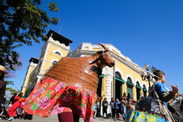
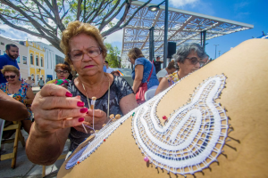
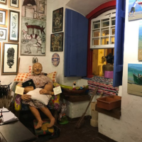
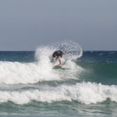
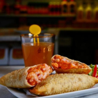
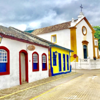

Cultura:
A cidade de Florianópolis possui uma cultura muito diversificada, formada a partir da contribuição dos imigrantes que fundaram cidade, com destaque para os açorianos. Além disso, há uma forte influência de elementos naturais, como o mar, que contribuíram para a criação de lendas e para a origem de festividades que ocorrem no município. A dança do pau de fita e o Folguedo do Boi Mamão são manifestações folclóricas típicas de Florianópolis. Saiba mais clicando
O artesanato típico da capital catarinense é caracterizado pelas peças de renda, redes de praia e
tapeçarias diversas. Já culinária local tem como base o consumo de peixes de água salgada, moluscos
e crustáceos. Os esportes ao ar livre são os mais praticados no município, com destaque para
corrida, caminhada, skate, surfe, kitesurfe e vela. A cultura do surfe e do skate, inclusive, é
muito forte nas áreas litorâneas da cidade. Saiba mais clicando aqui!




